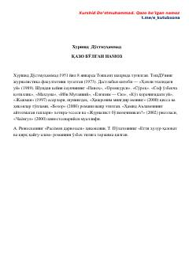

QBInson taqdiri va ruhiy kechinmalari haqidagi o'zbek adabiyoti asari.
Ushbu asar taniqli o'zbek yozuvchisi Xurshid Do'stmuhammad қалама мансуб bo'lib, inson taqdiri, uning ruhiy kechinmalari va hayotiy sinovlari haqida hikoya qiladi. Kitobda milliy ruh, insoniy munosabatlar va axloqiy masalalar chuqur ochib berilgan.